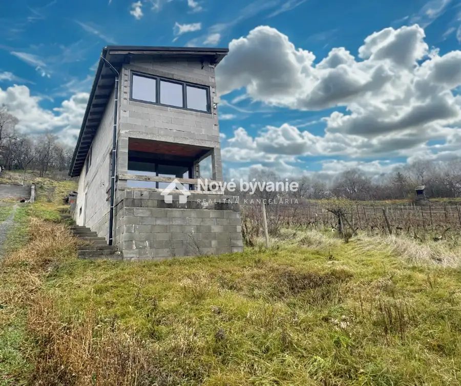
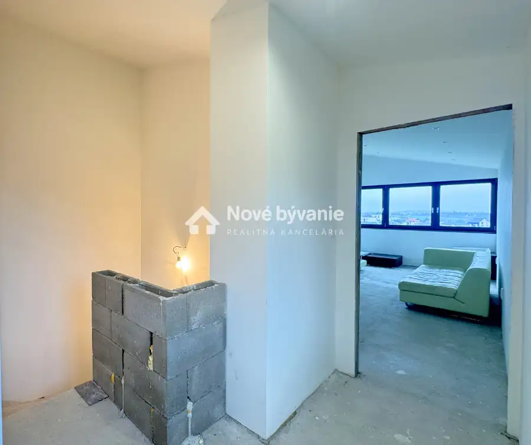
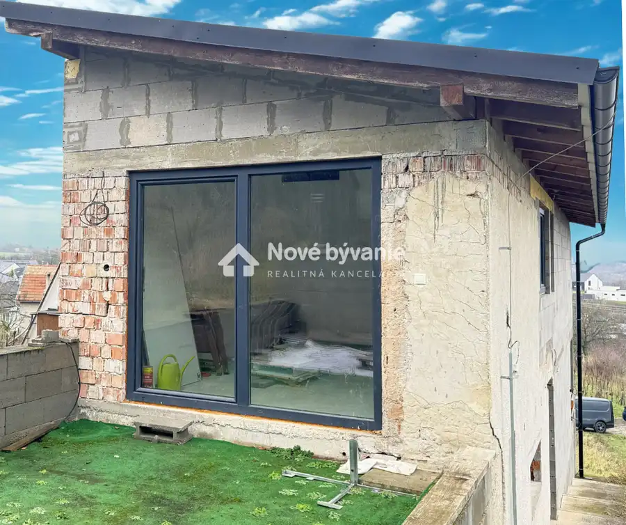
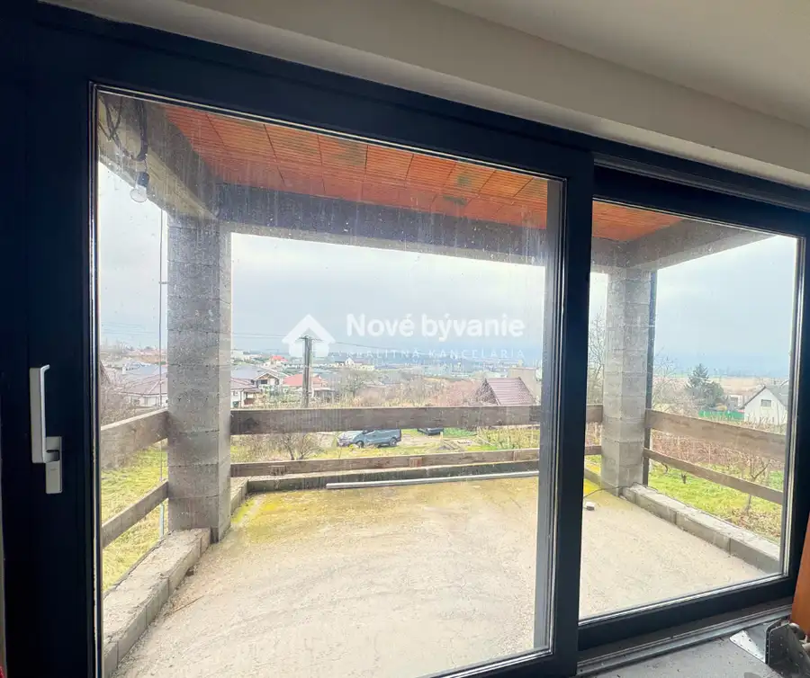
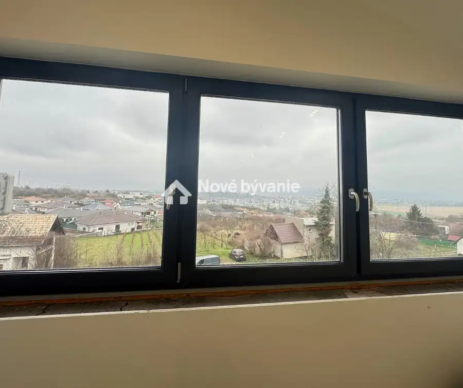
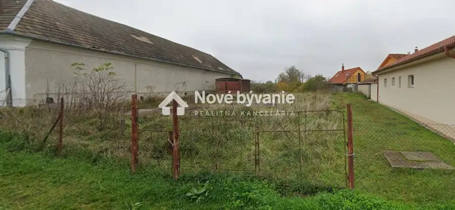
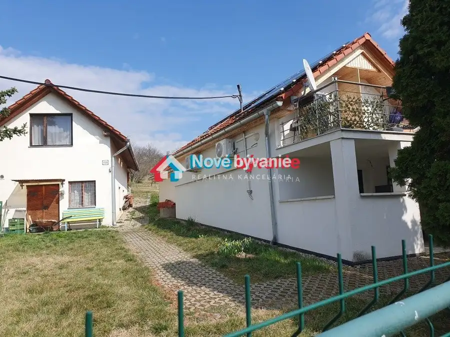
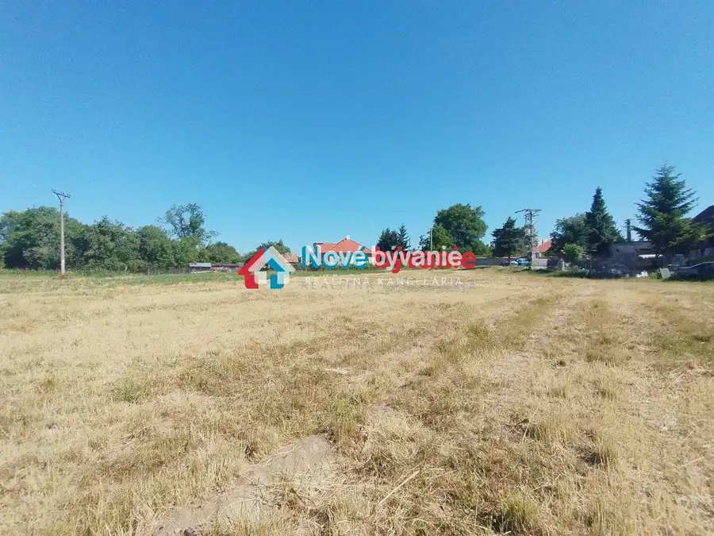

Rekreačná chata | Krížny vrch - Levice N010-13-TIKUa
Levice





- StavNovostavba
- VlastníctvoOsobné
O nehnuteľnosti
Moderná novostavba v tichej časti Kusej Hory, s krásnym výhľadom na Krížny Vrch a mesto Levice. Ideálne miesto prepokojné bývanie alebo rekreáiciu - súkromie, príroda, mesto na dosah.HLAVNÉ VÝHODY:Top lokalita - tichá, slnečná, vyhľadávanáKrásny výhľad, ktorý sa neopozeráDve priestranné terasy - bazén, altánok, relax zónaNovostavba 2025 - moderné riešenia, nízke nákladyMožnosť celoročného bývania aj víkendového úniku z mestaVlastná studňa - úžitková voda, praktické riešenieMožnosť výstavby garážeDISPOZÍCIA:Prízemie: priestranná obývacia izba s terasou, kuchyňa, samostatné WC, pivnicaPoschodie: 2 izby, terasa, veľká kúpeľňa, WC, extra úložný priestor, terasa s prípravou na vonkajšiu kuchynkuTECHNICKÉ INFORMÁCIE:stavba z YTONGu, sadrokartónové stropy, nové elektroinštalácieplechová pultová strecha, zateplenie Nobasil 36 cmplastové okná antracit, trojsklo, bezpečnostné dvere ADLERvykurovanie: krbové kachle + klimatizácia (jednotka + príprava v ďalších izbách, príprava na elektrický bojler aj podlahové kúreniepríprava na ČOV/žumpudom sa predáva prázdny - pripravený na zariadenie podľa vlastného vkusuPOZEMOK: výmera 606 m2 , šírka cca 7,5 m, veľká terasa za domom - ideálna na bazén alebo relax zónu, prístup po spevnenej štrkovej cesteCena: 87 000€✅ V cene nehnuteľnosti je zahrnutý kompletný realitný servis. Radi vám zároveň pomôžeme aj s vybavením hypotekárneho úveru prostredníctvom nášho finančného tímu.📞 Natália Gažiová📱 0948 602 878✉️ gaziova@novebyvaniereality.sk
Parametre
- Druh
- Chalupa, rekreačný domček
- Dátum zverejnenia
- 02. 12. 2025
- Plocha pozemku
- 0 m²
- Počet izieb / miestností
- 3
- Počet nadzemných podlaží
- 2
- Stav nehnuteľnosti
- Novostavba
- Typ
- Predaj
- Typ konštrukcie
- Iná
- Vlastníctvo
- Osobné
- Vybavenie
- Terasa
- Vykurovanie
- Ústredné
- Úžitková plocha
- 0 m²
Kde to je


Mohlo by Vás zaujímať

PozemokNové 154 000 €Veľký stavebný pozemok Kalinčiakovo (N012-14-MAHA) Levice 1659 m²
Chalupa, rekreačný domčekNové 179 000 €Predaj, 2 zrekonštruované viničné domy | Levice (N028-13-MAHA) Levice 191 m²
PozemokNové 33 000 €Predaj, pozemok - Bátovce (N048-14-MAHA) Bátovce 988 m²